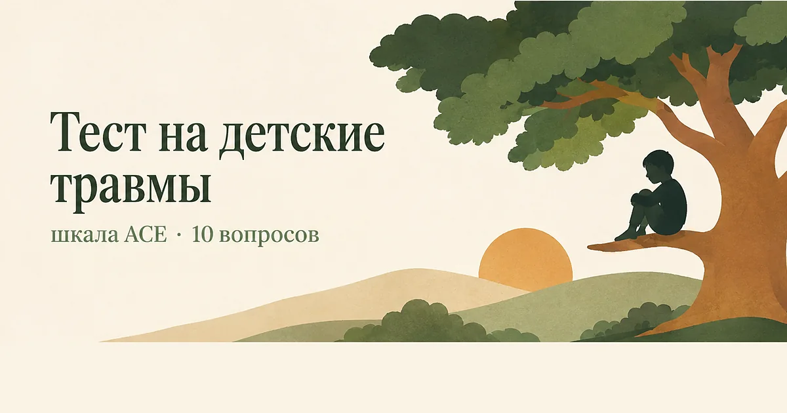

Главная → Тесты → Тест на детские травмы
Тест на детские травмы (шкала ACE)
Обновлено: 10.08.2026 · 3 минуты на прохождение
Это тест ACE — шкала неблагоприятного детского опыта из десяти вопросов, выросшая из крупного исследования Кайзер-Перманенте и CDC. Она считает не тяжесть пережитого, а число разных видов трудного опыта до 18 лет: насилие, пренебрежение, тяжёлые обстоятельства в семье. Результат — от 0 до 10 баллов. Бесплатно, без регистрации, ответы остаются в браузере. Сразу скажем главное: этот балл описывает условия, в которых вы росли, а не то, что с вами будет дальше.

Что показывает шкала ACE
В середине 1990-х врач Винсент Фелитти столкнулся со странностью: пациенты, успешно худевшие в его программе, чаще других с неё срывались. Разговоры показали закономерность — за срывами стоял детский опыт насилия, а лишний вес выполнял защитную функцию. Из этого наблюдения выросло исследование ACE, опубликованное в 1998 году: 9508 взрослых, обычные пациенты страховой программы, а не клиенты клиник.
Результат оказался неожиданным по двум причинам. Во-первых, трудный детский опыт встречался несопоставимо чаще, чем предполагали: более половины участников отметили хотя бы одну категорию, четверть — две и больше. Во-вторых, обнаружилась дозозависимость: чем больше разных видов опыта человек пережил, тем выше в среднем по группе оказывались риски — от депрессии и зависимостей до сердечно-сосудистых заболеваний.
Опросник устроен предельно просто. Десять вопросов — десять категорий, каждая считается один раз и стоит один балл. Шкала не спрашивает, как долго это длилось, насколько было тяжело и был ли рядом хоть один взрослый, на которого можно было опереться. Она считает разнообразие, а не глубину, — и в этом её сила как исследовательского инструмента и слабость как рассказа про конкретного человека.
Расшифровка результата
Общепринятого деления на «уровни» у ACE нет: в исследованиях обычно сравнивают группы 0, 1, 2–3 и 4 и более баллов. Отметка в четыре балла — та, вокруг которой строится большинство выводов.
| Баллы | Как это читается |
|---|---|
| 0 | Ни одна из категорий не отмечена. Это не значит «идеальное детство»: список закрывает не всё |
| 1 | Один вид трудного опыта — самый частый результат среди взрослых |
| 2–3 | Несколько категорий сразу; обычно они связаны между собой, а не случайны |
| 4 и больше | Порог, с которого в исследованиях заметно росли средние риски по группе. Повод отнестись к себе внимательнее — не повод считать, что что-то предрешено |
Почему балл — не приговор
Это главное, что стоит сказать про ACE, и обычно об этом пишут в последнюю очередь. Цифры из исследования — статистика по большим группам людей. Утверждение «в группе с четырьмя и более баллами депрессия встречалась в несколько раз чаще» не переводится в утверждение «у вас будет депрессия». В той же группе большинство людей не заболело.
Второе: шкала измеряет только то, что случилось, и ничего — о том, что было потом. Она не знает, был ли рядом бабушкин дом, тренер, учитель или старшая сестра; появилась ли позже безопасная привязанность; проходили ли вы терапию. Всё это меняет исход сильнее, чем сам факт события. В исследованиях защитного опыта эти вещи считают отдельными шкалами — и они работают.
Третье, о чём часто забывают: высокий балл нередко означает не «я сломан», а «я справлялся с тем, с чем восьмилетнему справляться не полагается». Многие механизмы, которые сейчас мешают — сверхбдительность, привычка считывать чужое настроение раньше своего, трудность просить о помощи, — когда-то были разумным способом выжить в конкретной обстановке. Разговор в терапии обычно начинается не с того, чтобы их выкорчевать, а с того, чтобы понять, где они больше не нужны.
Что делать с результатом
0–1 балл
Специальных действий этот результат не требует. Если при этом вам тяжело, доверяйте не цифре, а своему состоянию: список ACE не включает буллинг, тяжёлую болезнь в семье, вынужденный переезд, войну, бедность и эмоциональный холод, который никто не называл насилием. Всё это оставляет след, но в десять пунктов не попало.
2–3 балла
Полезнее общей суммы — посмотреть, какие именно пункты вы отметили и как они отзываются сегодня. Частая связка: опыт непредсказуемого поведения взрослых → взрослая привычка постоянно сканировать обстановку и ждать подвоха. Если узнаёте себя в этом, имеет смысл почитать про схема-терапию — это подход, который прицельно занимается повторяющимися сценариями, идущими из детства.
4 балла и больше
Это тот результат, ради которого шкалу и придумали. Разумный шаг — не «начать беспокоиться о здоровье», а найти специалиста, работающего с травмой: КПТ, ориентированная на травму, EMDR и схема-терапия имеют доказательную базу именно здесь. Хорошая новость в том, что последствия такого опыта поддаются работе, и заметное улучшение обычно наступает раньше, чем ожидают.
Отдельно: если детский опыт до сих пор возвращается вспышками воспоминаний, кошмарами или ощущением, что тело реагирует раньше, чем вы успеваете подумать, — это не «слабость характера», а описанные симптомы, с которыми работают. Их не нужно терпеть годами.
Чего шкала не видит
Ограничения ACE известны и признаются самими авторами:
- Не учитывает тяжесть и длительность. Один эпизод и десять лет систематического — один балл;
- Не учитывает поддержку. Наличие хотя бы одного надёжного взрослого сильно меняет исход, но в сумму не входит;
- Список неполон. В него не попали буллинг, бедность, дискриминация, война, серьёзная болезнь ребёнка, смерть близкого. Расширенная версия ВОЗ — ACE-IQ — часть этого добавляет;
- Опирается на воспоминания. Взрослый вспоминает детство избирательно, а нормализация («у всех так было») занижает ответы;
- Не диагностический инструмент. ACE создавали для эпидемиологии — сравнивать группы, а не оценивать отдельного человека.
Именно поэтому мы не показываем в результате «ваш риск заболеваний». Такой перевод статистики на конкретного человека некорректен, а прочитать его можно только одним способом — как приговор.
Когда стоит обратиться к специалисту
Независимо от суммы баллов, поводом обратиться будет любое из этого:
- воспоминания возвращаются непрошено — вспышками, снами, реакцией на запах или звук;
- вы избегаете мест, разговоров и людей, которые напоминают о случившемся;
- в отношениях повторяется один и тот же болезненный сценарий — подробнее об этом в статье о токсичных отношениях;
- держится ощущение, что с вами «что-то фундаментально не так», — частое следствие раннего опыта, и оно поддаётся работе (см. также как повысить самооценку);
- вы регулярно приглушаете состояние алкоголем или чем-то ещё;
- появляются мысли о том, что лучше было бы не жить.
Последний пункт — повод обратиться срочно, а не когда будет время.
Если тест поднял то, о чём давно не с кем поговорить, — расскажите об этом здесь. Анонимно, без регистрации, в любое время суток.
Попробовать бесплатноЧастые вопросы
Что означает 4 балла и больше по шкале ACE?
Четыре балла — порог, начиная с которого в исследовании Фелитти заметно росли средние риски по группе: депрессия, зависимости, ряд соматических заболеваний. Но это статистика по тысячам людей, а не прогноз для конкретного человека: большинство участников с высоким баллом не заболели. Практический смысл такого результата один — есть смысл найти специалиста, работающего с травмой.
Тест ACE ставит диагноз?
Нет. ACE — эпидемиологическая шкала, её создавали для сравнения больших групп, а не для оценки отдельного человека. Она считает количество разных видов трудного опыта и ничего не говорит о вашем нынешнем состоянии. Диагноз может поставить только специалист после разговора.
Можно ли что-то изменить, если детство уже прошло?
Да, и это подтверждено практикой: последствия раннего опыта поддаются психотерапии. Доказательную базу именно здесь имеют КПТ, ориентированная на травму, EMDR и схема-терапия. Меняется не прошлое, а то, как оно продолжает работать сейчас: реакции, ожидания от людей, отношение к себе.
Тест на детские травмы анонимный?
Да. Тест бесплатный, регистрация не нужна, ответы считаются прямо в браузере и никуда не отправляются — мы их не получаем и не храним. Результат виден только вам и исчезает, как только вы закроете страницу.
Материал подготовлен командой AI Therapist. Мы приводим шкалу ACE в её общепринятом виде, без изменения формулировок, и сознательно не переводим результат в индивидуальный прогноз здоровья: исходные данные получены на группах и для отдельного человека так не читаются. Страница носит просветительский характер и не заменяет консультацию специалиста.
Источники: Felitti V. J. et al. «Relationship of childhood abuse and household dysfunction to many of the leading causes of death in adults», American Journal of Preventive Medicine, 1998, ВОЗ — Adverse Childhood Experiences International Questionnaire (ACE-IQ), ВОЗ — жестокое обращение с детьми.
Кто отвечает за содержание сайта и по каким правилам мы готовим материалы — на странице о проекте.